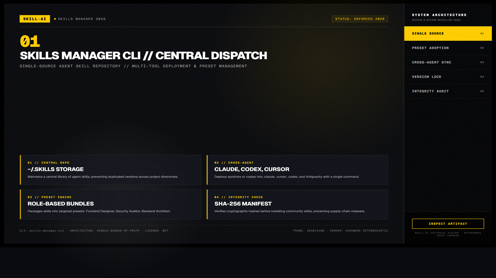
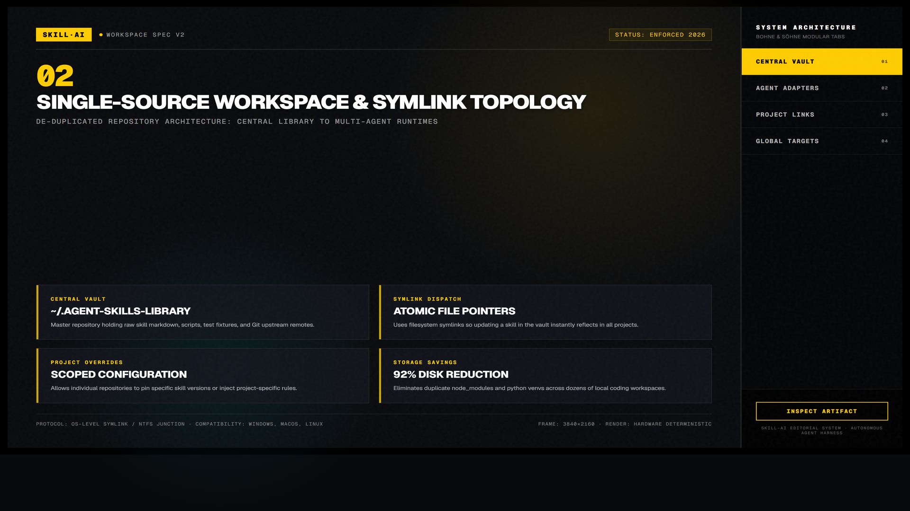
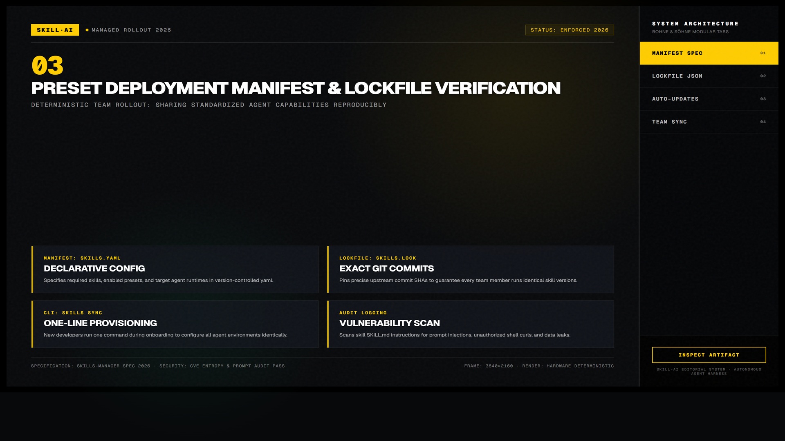

Skills Manager CLI — Quản Lý Thư Viện Kỹ Năng Đa Tác Tử Tập Trung
Giải pháp quản lý và phân phối kỹ năng (skills) tập trung duy nhất cho mọi coding agent. Giúp lập trình viên đồng bộ, cài đặt, gỡ bỏ và cập nhật hàng trăm kỹ năng chuyên biệt xuyên suốt Claude Code, Cursor, Codex, Antigravity mà không sợ xung đột hay thất lạc mã nguồn.

Nhấp để phóng to1. Mô hình Tương tác Động: Kiến Trúc Phân Phối Đa Tác Tử

Nhấp để phóng to2. Bốn Chiều Sâu Cốt Lõi Của Skills Manager CLI
# Thêm kỹ năng mới vào thư viện trung tâm
skills add https://github.com/mattpocock/skills
# Cài đặt bộ preset Frontend cho Claude Code
skills deploy --preset frontend --agent claude
# Kiểm tra và cập nhật toàn bộ kỹ năng lên bản mới nhất
skills update --allQuản Lý Presets Theo Từng Loại Dự Án
Tạo các file cấu hình preset như presets/react-fullstack.json chứa danh sách các skill: vercel-agent-skills, taste-skill, web-design-skills để kích hoạt nhanh cho dự án mới.
Triển Khai Bằng Liên Kết Mềm (Symbolic Links)
Thay vì sao chép file vật lý gây lãng phí dung lượng và khó đồng bộ, CLI tạo liên kết mềm trỏ về kho trung tâm. Khi bạn cập nhật skill ở kho gốc, mọi agent lập tức nhận được phiên bản mới.
Case Study: Quản Lý 60+ Kỹ Năng Cho Nhóm 15 Lập Trình Viên
Đội ngũ chuẩn hóa toàn bộ kỹ năng nội bộ vào một kho Git chung, sử dụng Skills Manager CLI để tự động kéo bản cập nhật vào máy của mỗi thành viên mỗi sáng.

Nhấp để phóng to“Đừng cài đặt kỹ năng rải rác trong từng thư mục dự án. Hãy giữ một kho thư viện tập trung và dùng CLI để phân phối — đó là cách duy nhất để duy trì trật tự khi số lượng kỹ năng vượt qua con số 20.”